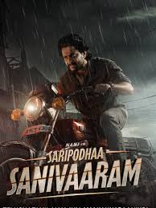

| S.No |
Movie Image |
Song |
Movie Description |
Download |
| 1 |
|
Bujji Thalli |
"Thandel" is a Telugu action drama movie starring Naga Chaitanya and Sai Pallavi, based on a true incident where fishermen from Srikakulam were detained in Pakistan after unknowingly crossing international waters. |
Download
|
| 2 |
|
Daavudi |
"Devara: Part 1" follows Devara, a righteous man who is a chieftain of a coastal village, and his rivalry with Bhaira, a ruthless counterpart, who both engage in arms smuggling in the Red Sea. |
Download
|
| 3 |
Fear song |
Download
|
| 4 |
 |
Ala Ninnu Cheri |
"Ala Ninnu Cheri" tells the story of a wealthy girl, Divya, who falls in love with a young man, Ganesh, who dreams of becoming a film director |
Download
|
| 5 |
 |
Poolamme Pilla |
"Hanu-Man" is a 2024 Indian Telugu-language superhero movie directed by Prasanth Varma. |
Download
|
| 6 |
|
Hey Rangule |
"Amaran" is a Tamil biographical action drama starring Sivakarthikeyan and Sai Pallavi, based on the life of Major Mukund Varadarajan, a member of the Rashtriya Rifles who was martyred in Kashmir in 2014. |
Download
|
| 7 |
Vediminnu Nevanta |
Download
|
| 8 |
 |
Ullasam |
"Saripodhaa Sanivaaram" is a 2024 Telugu action-thriller where Surya (Nani) channels his anger into vigilantism on Saturdays, clashing with the corrupt cop Dayanand (SJ Suryah) who terrorizes a village. |
Download
|
| 9 |
 |
Suttamla Soosi |
The film follows the rise and fall of Ratna, a ruffian from a village on the Godavari river, as he enters the world of politics and crime, ultimately facing consequences for his ambition and actions. |
Download
|
| 10 |
|
Chaala Bagundhi |
"Tiragabadara Saami" is a 2024 Telugu action drama film directed by A. S. Ravi Kumar Chowdary. The movie stars Raj Tarun and Malvi Malhotra in the lead roles. The story follows a young couple who are drawn into a dangerous situation after an altercation with a mafia henchman. |
Download
|